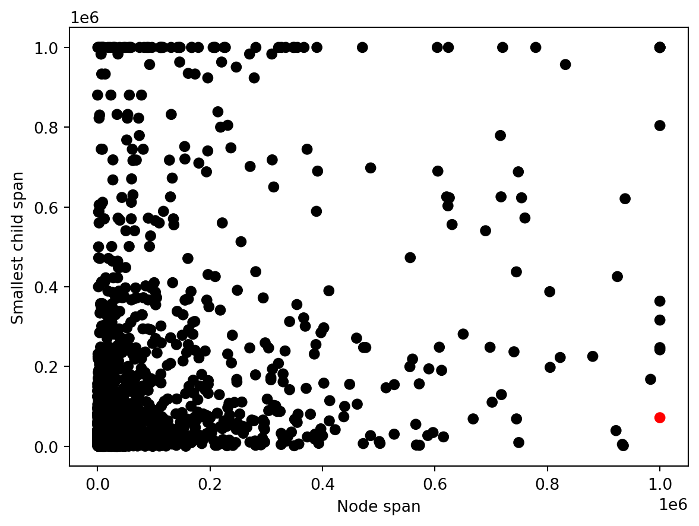
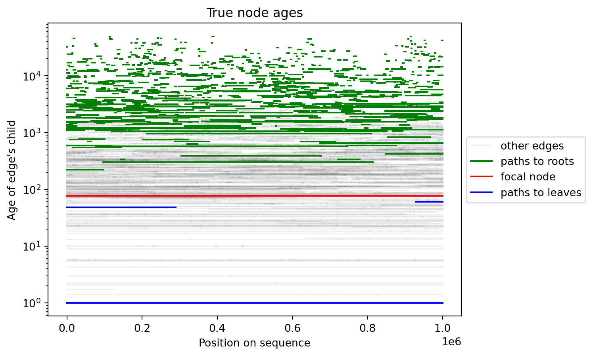
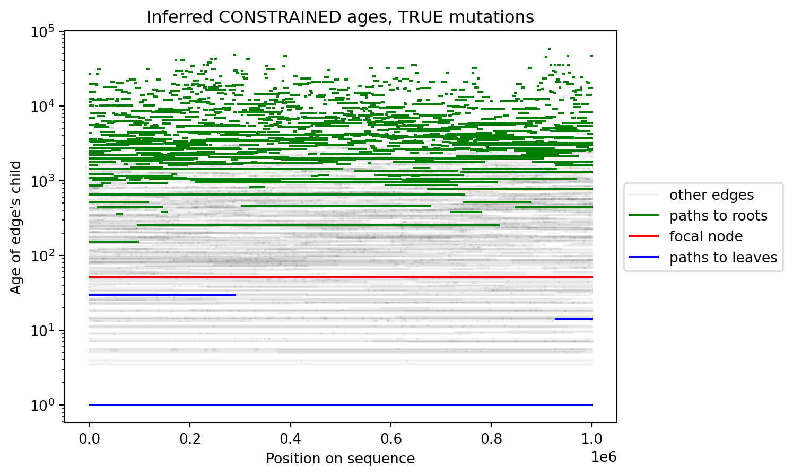
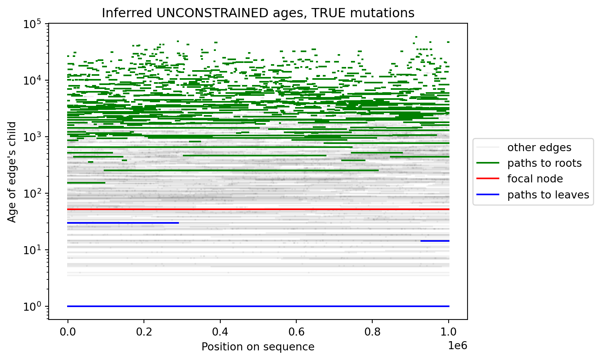
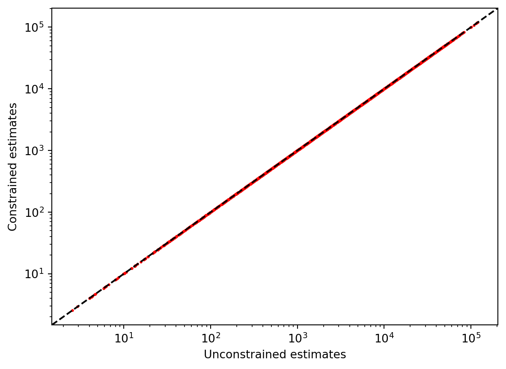
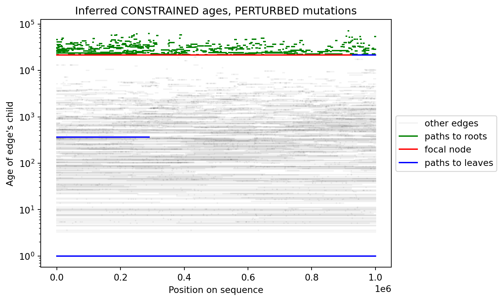
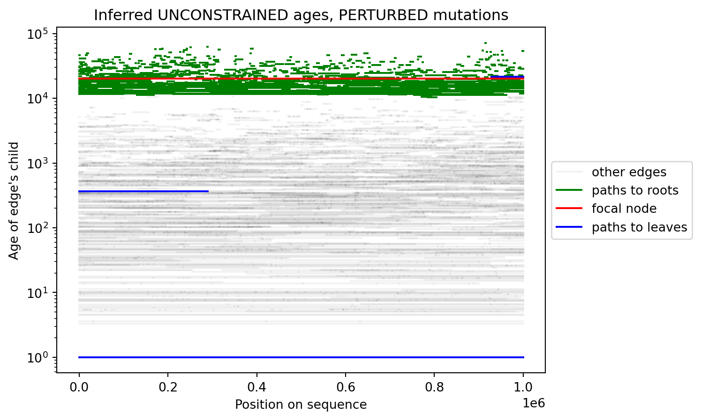

import os
import json
import tsdate
import tskit
import numpy as np
import msprime
import matplotlib.pyplot as plt
np.random.seed(1024)Constraints in tsdate
We’re going to construct a situation where the positive-branch-length constraint introduces artefacts in dating. Briefly, we do this by taking a node with a long span (“focal parent”); finding a path that leads from this node to a sample through a second node with a short span (“focal child”); and introduce a bunch of mutations beneath the focal child so that it “appears” to the dating algorithm that the focal child is older than the focal parent.
Find a focal parent
Simulate some data:
mu = 1.25e-8
Ne = 1e4
if os.path.exists("example.trees"):
ts = tskit.load("example.trees")
else:
ts = msprime.sim_ancestry(
samples=100,
sequence_length=1e6,
recombination_rate=1e-8,
population_size=Ne,
random_seed=101,
)
ts = msprime.sim_mutations(
ts,
rate=mu,
random_seed=101,
)
ts.dump("example.trees")Calculate spans of nodes:
node_spans = np.bincount(
ts.edges_child,
weights=ts.edges_right - ts.edges_left,
minlength=ts.num_nodes,
)
for t in ts.trees(): node_spans[t.root] += t.spanFor each node, find the child with the smallest span that isn’t a sample,
smallest_child_span = np.full(ts.num_nodes, np.inf)
samples = set(ts.samples())
for p, c in zip(ts.edges_parent, ts.edges_child):
if c not in samples:
smallest_child_span[p] = min(
smallest_child_span[p], node_spans[c]
)
smallest_child_span[np.isinf(smallest_child_span)] = np.nanPick a focal parent with (1) a large span; (2) a small minimum-child-span
target = np.logical_and(
node_spans > 0.8e6, smallest_child_span < 0.1e6
)
colors = ['black' for _ in target]
focal = np.flatnonzero(target)[0]
colors[focal] = 'red'
plt.scatter(
node_spans,
smallest_child_span,
c=colors,
)
plt.xlabel("Node span")
plt.ylabel("Smallest child span")
plt.draw()
print(f"Focal parent is node {focal}")Focal parent is node 278
Find a focal child
Identify all nodes on a path between the focal parent and any sample; and all nodes on a path between the focal parent and any root.
to_roots = np.full(ts.num_nodes, False)
to_roots[focal] = True
for p, c in zip(ts.edges_parent, ts.edges_child):
to_roots[p] |= to_roots[c]
to_roots[focal] = False
print(f"{np.sum(to_roots)} nodes on paths between {focal} and roots")
to_leaves = np.full(ts.num_nodes, False)
to_leaves[focal] = True
for p, c in zip(ts.edges_parent[::-1], ts.edges_child[::-1]):
to_leaves[c] |= to_leaves[p]
to_leaves[focal] = False
print(f"{np.sum(to_leaves)} nodes on paths between {focal} and leaves")
assert np.all(ts.nodes_time[to_leaves] < ts.nodes_time[focal])
assert np.all(ts.nodes_time[to_roots] > ts.nodes_time[focal])874 nodes on paths between 278 and roots
6 nodes on paths between 278 and leavesNow get all edges on these paths, and edges that subtend the focal parent:
# (this doesn't include roots, TODO)
edges_to_leaves = to_leaves[ts.edges_child]
edges_to_leaves = [
(l, r, c) for l,r,c in zip(
ts.edges_left[edges_to_leaves],
ts.edges_right[edges_to_leaves],
ts.edges_child[edges_to_leaves],
)
]
edges_to_roots = to_roots[ts.edges_child]
edges_to_roots = [
(l, r, c) for l,r,c in zip(
ts.edges_left[edges_to_roots],
ts.edges_right[edges_to_roots],
ts.edges_child[edges_to_roots],
)
]
edges_at_focal = (ts.edges_child == focal)
edges_at_focal = [
(l, r, c) for l,r,c in zip(
ts.edges_left[edges_at_focal],
ts.edges_right[edges_at_focal],
ts.edges_child[edges_at_focal],
)
]Plot the locations of these edges in the sequence and in time. Here, the focal parent is colored red; edges on leafward paths from the focal parent are colored blue; edges on rootward paths from the focal parent are colored green; all other edges are light transparent gray.
def edges_plot(nodes_time, title):
"""
Plot collections of edges defined above.
Add 1 to node ages so that samples show at time 0
on log-transformed y-axis.
"""
label = 'other edges'
for l, r, c in zip(ts.edges_left, ts.edges_right, ts.edges_child):
t = nodes_time[c] + 1
plt.plot([l, r], [t, t], c='black', label=label, alpha=0.05)
label = None
label = 'paths to roots'
for l, r, c in edges_to_roots:
t = nodes_time[c] + 1
plt.plot([l, r], [t, t], c='green', label=label)
label = None
label = 'focal node'
for l, r, c in edges_at_focal:
t = nodes_time[c] + 1
plt.plot([l, r], [t, t], c='red', label=label)
label = None
label = 'paths to leaves'
for l, r, c in edges_to_leaves:
t = nodes_time[c] + 1
plt.plot([l, r], [t, t], c='blue', label=label)
label = None
plt.xlabel("Position on sequence")
plt.ylabel("Age of edge's child")
plt.yscale("log")
plt.legend(loc='center left', bbox_to_anchor=(1, 0.5))
plt.title(title)
plt.draw()
edges_plot(ts.nodes_time, "True node ages")
We’ll pick the focal child to be the short blue segment on the right.
tmp = 0
for l, r, c in edges_to_leaves:
if c not in samples and l > tmp:
tmp = l
focal_child = c
print(f"Focal child is node {focal_child}")Focal child is node 258Date using correct mutation counts
Here’s the same plot as before, but with inferred ages from tsdate. These have the positive branch length constraint enforced by tsdate.core.constrain_ages_topo (if there are any children older than their parents, this function will make the parents in question very slightly older than their children).
dts = tsdate.date(
ts, population_size=1e4, mutation_rate=mu, method="variational_gamma"
)
edges_plot(dts.nodes_time, "Inferred CONSTRAINED ages, TRUE mutations")
This looks reasonable. Let’s also check the unconstrained dates from output by the EP algorithm.
dts_unconstr = np.array([
json.loads(n.metadata or '{"mn":0}')['mn'] for n in dts.nodes()
])
edges_plot(dts_unconstr, "Inferred UNCONSTRAINED ages, TRUE mutations")
Looks identical, so the branch length constraint evidently isn’t violated by the unconstrained estimates in this “well behaved” situation.
plt.scatter(dts_unconstr, dts.nodes_time, c='red', s=2)
plt.axline((10,10), (100,100), c='black', linestyle='--')
plt.xlabel("Unconstrained estimates")
plt.ylabel("Constrained estimates")
plt.xscale('log')
plt.yscale('log')
plt.draw()
Perturbing mutation counts
Now, we’ll introduce a bunch of mutations underneath the focal child so that it appears to be older than it actually is.
# figure out which edges to add mutations to
left_bound = min(
[l for (l, r, c) in edges_to_leaves if c == focal_child]
)
edges_to_perturb = np.logical_and(
ts.edges_parent == focal_child,
ts.edges_left >= left_bound,
)
print("Edges to add bogus mutations to:")
for l, r, p, c in zip(
ts.edges_left[edges_to_perturb],
ts.edges_right[edges_to_perturb],
ts.edges_parent[edges_to_perturb],
ts.edges_child[edges_to_perturb],
):
print(f"left: {l}, right: {r}, parent: {p}, child: {c}")
bogus_mutations = 1000
new_mut_edges = np.random.choice(
np.flatnonzero(edges_to_perturb),
size=bogus_mutations,
)
new_mut_nodes = ts.edges_child[new_mut_edges]
# figure out what locations to add new sites
existing_sites = [s.position for s in ts.sites()]
new_sites = np.setdiff1d(
np.arange(left_bound, ts.sequence_length), existing_sites
)
np.random.shuffle(new_sites)
new_sites = new_sites[:bogus_mutations]
print(f"Adding {bogus_mutations} new sites from {min(new_sites)} to {max(new_sites)} bp")
# make a new ts with a bunch of mutations on these edges
tables = ts.dump_tables()
for pos, node in zip(new_sites, new_mut_nodes):
id = tables.sites.add_row(position=pos, ancestral_state="G")
tables.mutations.add_row(
site=id, node=node, derived_state="A", time=tskit.UNKNOWN_TIME
)
tables.sort()
ts_perturb = tables.tree_sequence()
assert ts_perturb.num_mutations == ts.num_mutations + bogus_mutations
assert np.allclose(ts_perturb.nodes_time, ts.nodes_time)Edges to add bogus mutations to:
left: 928083.0, right: 1000000.0, parent: 258, child: 58
left: 928083.0, right: 1000000.0, parent: 258, child: 106
Adding 1000 new sites from 928153.0 to 999987.0 bpNow, we’ll date with the perturbed mutation table:
dts_perturb = tsdate.date(
ts_perturb, population_size=1e4, mutation_rate=mu, method="variational_gamma",
max_iterations=1,
)
edges_plot(dts_perturb.nodes_time, "Inferred CONSTRAINED ages, PERTURBED mutations")
The focal child (short blue segment on the right) has been pushed up to a much greater age; as a result, the topology constraint forces the focal parent (red segments) to be the same age as the focal child; and the distortion propagates upwards to influence a bunch of ancestors of the focal parent (green lines).
Do the unconstrained ages look any better?
dts_perturb_unconstr = np.array([
json.loads(n.metadata or '{"mn":0}')['mn'] for n in dts_perturb.nodes()
])
edges_plot(dts_perturb_unconstr, "Inferred UNCONSTRAINED ages, PERTURBED mutations")
The same artefact still shows up for the focal parent and focal child, but notice that the ancestors (while still severely impacted) aren’t forced to lie above the focal parent:
plt.scatter(dts_perturb_unconstr, dts_perturb.nodes_time, c='red', s=2)
plt.axline((10,10), (100,100), c='black', linestyle='--')
plt.xlabel("Unconstrained estimates")
plt.ylabel("Constrained estimates")
plt.xscale('log')
plt.yscale('log')
plt.draw()